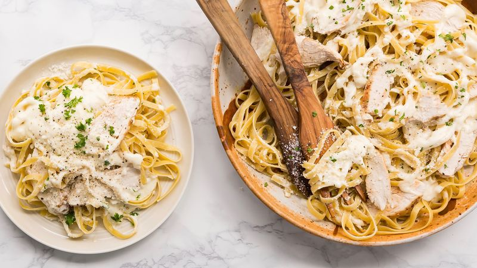

Chicken Alfredo

Break out the garlic bread and get your pasta bowls ready!
Ingredients
- 12 oz fettuccine pasta
- 2 tablespoons olive oil
- 1/2 cup + 2 tablespoons butter
- 2 boneless, skinless chicken breasts
- 1 1/2 teaspoons salt, divided
- 1 1/2 teaspoon fresh ground pepper, divided
- 3 cloves garlic, very finely chopped
- 1 1/2 tablespoons flour
- 2 cups heavy cream
- 3/4 cup grated Parmesan, plus more for topping if desired
- 2 tablespoons chopped parsley, for garnish (optional)
Directions
- Cook and drain pasta according to package directions.
- Add olive oil to a cast-iron grill pan over high heat. Add 2 tablespoons butter to hot pan, then quickly add chicken breasts to the pan, seasoning with 1 teaspoon each of the salt and pepper.
- Cook chicken breasts until golden on first side, then flip over. Cover the pan and reduce heat to medium, cooking until chicken is no longer pink in the center, about 5 to 7 minutes on the second side. Place on a plate and cover with foil until cool enough to slice into strips.
- In a large, deep-sided skillet, melt remaining 1/2 cup butter over medium heat. Add garlic to pan, cooking until aromatic, about 30 seconds. Reduce heat to medium-low. Season with remaining salt and pepper.
- Whisk flour into butter, stirring until no chunks remain. Slowly whisk in cream.
- Continue to cook just until sauce is steaming and slightly thickened. Whisk 1/2 cup Parmesan into sauce, stirring until smooth. Remove pan from heat and cover until ready to serve.
- To serve, place pasta in a serving bowl or on plates. Top with sliced chicken and drizzle with sauce. Garnish with parsley and top with additional Parmesan, if desired.